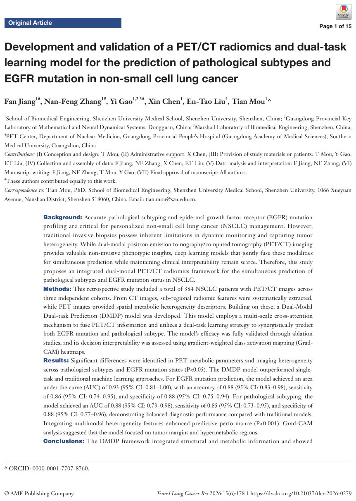
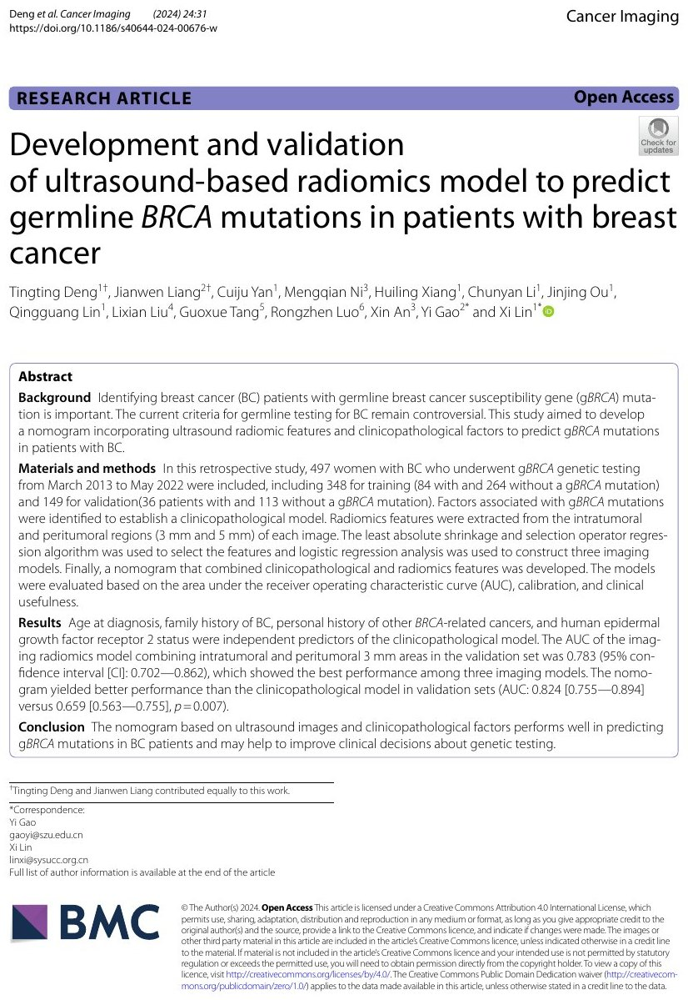
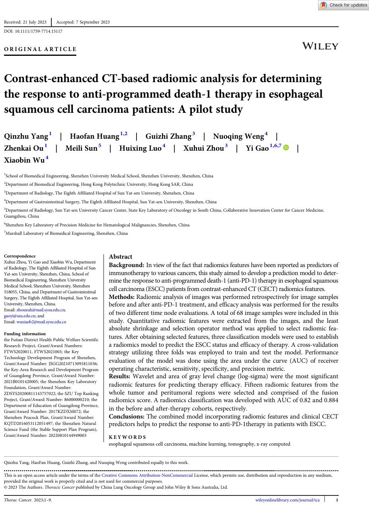
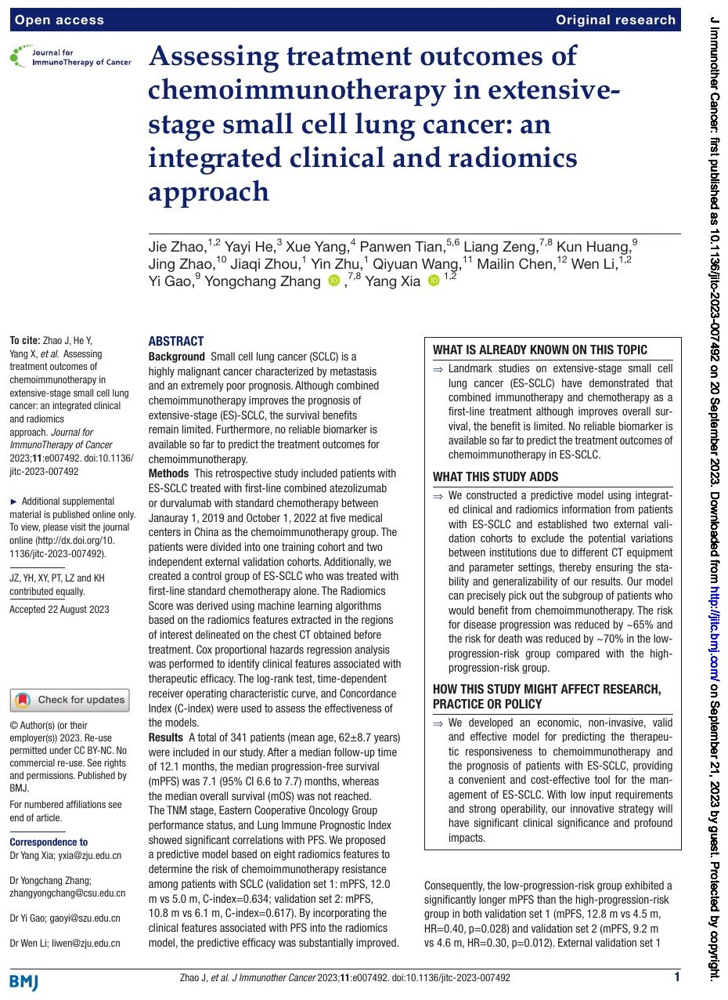
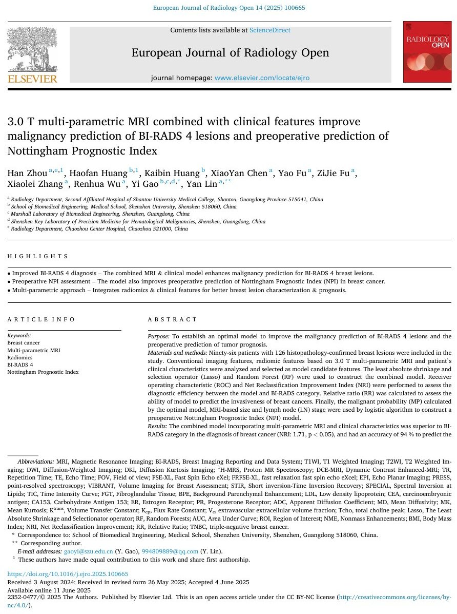
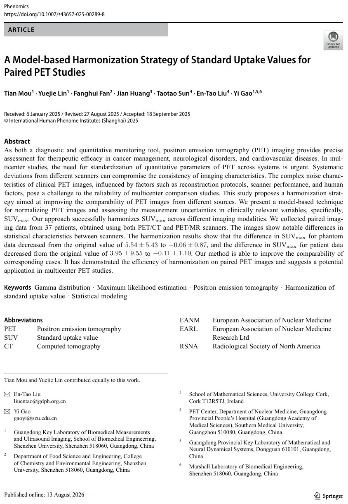

综述
把图像转化为可执行的临床预测：超声 BRCA 突变分层、食管癌与小细胞肺癌免疫治疗响应、MRI 风险分层、PET 定量调和。
- 超声影像组学预测胚系 BRCA 突变（Cancer Imaging 2024）
- 小细胞肺癌临床+影像组学整合疗效预测（JITC 2023）
- PET SUV 值模型化调和（Phenomics 2026）
06 · 代表工作
代表工作
每张卡片：上方配图，下方要点。
01

Development and validation of a PET/CT radiomics and dual-task learning model for the prediction of pathological subtypes and EGFR mutation in non-small cell lung cancer
Translational Lung Cancer Research · 2026
- PET/CT 影像组学与双任务学习预测非小细胞肺癌病理亚型与 EGFR 突变。
- 为靶向治疗选择提供无创提示。
02

Development and validation of ultrasound-based radiomics model to predict germline BRCA mutations in patients with breast cancer
Cancer Imaging · 2024
- 超声影像组学预测胚系 BRCA 突变。
- 基因检测的无创分层。
03

Contrast-enhanced CT-based radiomic analysis for determining the response to anti-programmed death-1 therapy in esophageal squamous cell carcinoma patients: A pilot study
Thoracic Cancer · 2023
- CT 影像组学预测食管鳞癌抗 PD-1 治疗响应。
- 面向免疫治疗响应预测的先导研究。
04

Assessing treatment outcomes of chemoimmunotherapy in extensive-stage small cell lung cancer: An integrated clinical and radiomics approach
Journal for ImmunoTherapy of Cancer · 2023
- 临床与影像组学整合模型预测小细胞肺癌化疗免疫疗效。
- 支持广泛期疾病的治疗选择。
05

3.0 T multi-parametric MRI combined with clinical features improve malignancy prediction of BI-RADS 4 lesions and preoperative prediction of Nottingham Prognostic Index
European Journal of Radiology Open · 2025
- 多参数 MRI 联合临床特征细化 BI-RADS 4 风险分层。
- 术前预测诺丁汉预后指数（NPI）。
06

A Model-based Harmonization Strategy of Standard Uptake Values for Paired PET Studies
Phenomics · 2026
- 配对 PET 研究 SUV 值的模型化调和。
- 消除纵向 PET 的扫描仪与协议差异。